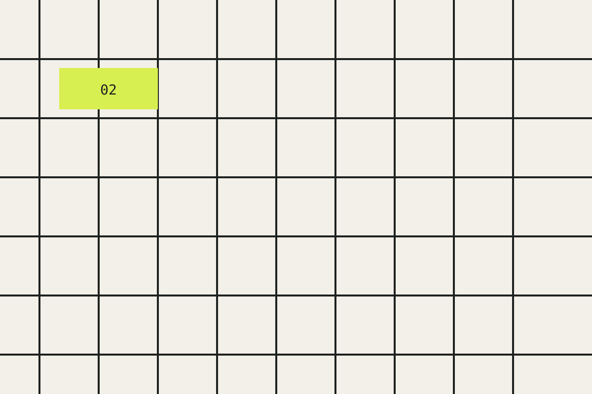
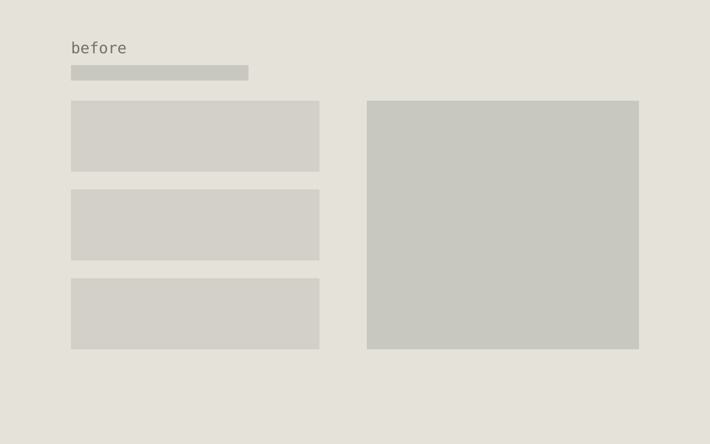
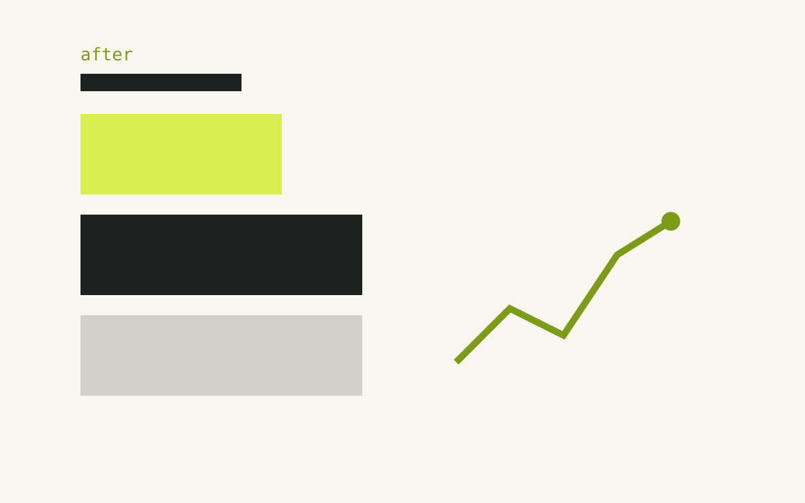
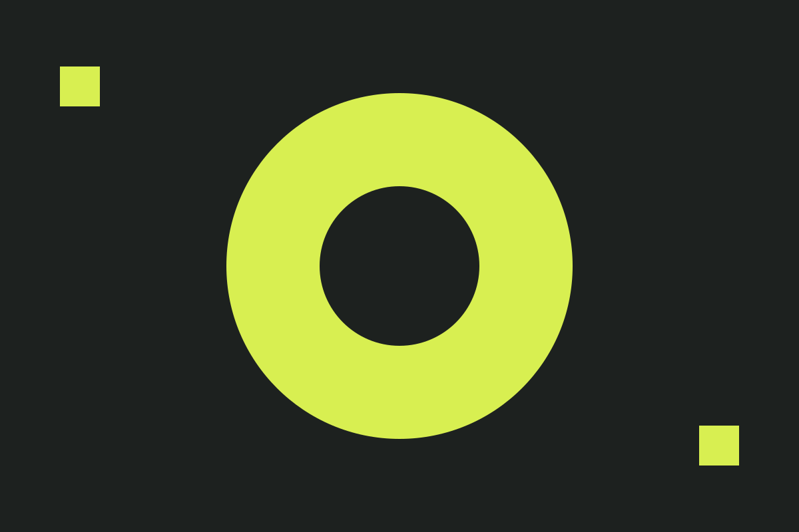

The case for a content system
Building a richer, calmer writing layer for a static site — a demonstration case study.
- Category
- Website and Content Management System
- Period
- Aug 2026 – Sep 2026
- Role
- Content systems designer
- Tools
- Eleventy, markdown-it, Prism, CSS
1 · Description
What was this project about? Write a short, plain-language summary of the product or initiative, who it was for, and what made it worth doing.
We write case studies that mix prose, evidence, and visuals. Plain Markdown carries the prose but struggles with the rich pieces: captioned figures, galleries, callouts, metrics, timelines, and before/after comparisons. The goal was a content layer with four properties:
- Lightweight. No new frontend framework, no client-side renderer.
- Portable. Content stays readable as source in any editor.
- Predictable. A documented, stable vocabulary an agent can generate against.
- Static. Everything renders at build time; JavaScript only enhances.
Use metrics for the outcomes that matter:
2 · Key Activities
List the concrete activities the team ran — research, design, build, or delivery. A checklist keeps it scannable:
Or as a plain list when order matters:
- Audited every editorial block the site needed
- Wrote the content spec — syntax, rules, and security constraints
- Registered the shortcode layer and GFM markdown configuration
- Shipped a demonstration case study and its field-guide post
3 · Challenge
Describe the problem you started from. What was broken, missing, or unclear before the work began?
In our case, the authoring experience was the blocker: separate tools produced inconsistent pages, and the gap between story and evidence kept widening. We needed one authoring format that could express prose and rich project evidence without pulling in a frontend framework.
4 · Feature or Structure
Show the shape of the solution. A table maps each piece to its job:
| Layer | Rendered by | Example |
|---|---|---|
| Basic Markdown | markdown-it | Headings, lists |
| GFM | markdown-it | Tables, task lists |
| Rich blocks | Eleventy shortcodes | Figures, callouts |
Or use columns for parallel ideas:
Small vocabulary. Twenty-odd shortcodes cover nearly every editorial need. If Markdown says it, Markdown does it.
One job each. figure for editorial images, metric for statistics, timeline for chronology. No cleverness hiding in arguments.
Appendices and full documentation
The complete syntax and argument order for every shortcode lives in docs/CONTENT-SPEC.md, kept stable so tooling can rely on it.
5 · Design Process
Walk through how the work unfolded. The timeline shortcode suits milestones:
-
Audit
Mapped every editorial block the site already needed into future content.
-
Spec
Wrote
docs/CONTENT-SPEC.md— syntax, rules, and security constraints. -
Build
Registered the shortcode layer and the GFM markdown configuration.
-
Showcase
Shipped this case study and the companion field-guide post.
For visual change, use the before/after shortcode:


Before AfterDrag the slider to compare the two states.
6 · Insight and Learning Takes
What did you learn? Pullquotes give weight to the single biggest takeaway:
The authoring experience is the product experience.
A principle that showed up repeatedly, in the words of the team that shipped it:
Markdown handles writing. Shortcodes handle meaningfully richer content. CSS handles presentation. JavaScript handles optional interaction.
7 · Gallery Preview
Group the project's key visuals. Click any image to open it full size.

When one image matters more than the others, give it a figure with a caption:
8 · Teams
Introduce the people who made it happen. A table keeps names and roles tidy:
| Member | Role |
|---|---|
| Nurizka | Designer & developer |
Or use a list when the team is larger:
- Nurizka F — Designer & Project Manager
- Khairani U — Analyst & Project Manager
- Alfian K — Back-End Developer
- Dzaki F — Front-End Developer
Closing record
A final note or embedded walkthrough closes the page:
11ty.dev Eleventy shortcodes The official reference for single and paired shortcodes.The outcome is boring in the best way: posts are plain Markdown files, the build is still a single static command, and the reading experience stays rich.